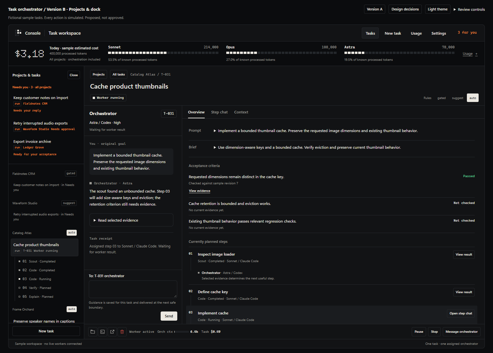
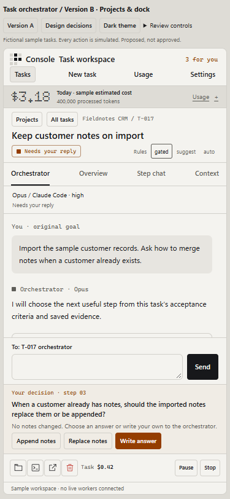

Proposed, not approved · interactive design prototype
The project dock around a task-scoped conversation.
52-B is strongest at navigation and acting on a task. The current task-orchestrator mockup is strongest at conversation, ownership, context and evidence. Version B combines those responsibilities without introducing a global model or changing the assigned orchestrator when you inspect a worker.
The navigator can close when you need more room. At 1050 px and below it becomes a drawer; below 760 px the four task panels become peers. The persistent decision remains visible whichever panel is selected.
Keep these parts of 52-B
- Projects, with Needs you pinned across projects. Every decision is listed once in the pinned queue. Its project keeps a small pointer, and each selected task exposes its steps underneath.
- Source and autonomy are visible. Console-driven tasks carry a run tag. External sessions carry the source app and a dashed rule. Gated, suggest and auto controls live in the task header; project labels summarize their tasks rather than pretending a new project-default setting was saved.
- The decision dock. One compact question, approval, hold or acceptance surface sits immediately above the action bar. Scrolling a long plan never hides the decision. The dock has no second message input.
- Prompt, brief and step timeline. Prompt and brief expand in place. Step rows show status and route; a compact orchestrator entry explains why work was chosen. These are current steps, not a required scout/design/code/verify ritual.
- Step inspection. Previous/next and Chat, Received, Handoff, Files share one inspector. Planned assignments are labelled undelivered, running steps have no completed handoff, and sample file references do not masquerade as a live diff.
- One action bar. Folder, terminal, handoff and protected deletion remain in sight, with task spend and explicitly labelled orchestrator context. State actions use words. No overflow menu hides Stop.
Every earlier state, mapped
The links are reproducible review scenarios. Use Review controls to inspect the original 24 orchestrator scenarios as well.
| 52-B state | Version B treatment | Review |
|---|---|---|
| Plan ready to start | Editable proposed steps. No assigned owner or worker until Start. First assignment uses the connected eligible routes and saved effort default. | Open ready-to-start |
| Running | Task-scoped orchestrator beside evidence; project step links, live read-only worker chat, guidance, Pause and Stop. | Open running |
| Plan confirm, gated | Read, redo or confirm the current plan. Confirmation starts the waiting worker. Changing autonomy does not confirm a pending plan. | Open plan approval |
| Needs you: decision | Append/replace presets submit to this task's orchestrator. Custom answers use the sole composer. Queued, received and delivered are separate. | Open question |
| Supervisor suggests | The task's existing orchestrator proposes a focused repair with evidence and limits. Approve, inspect reason or reject; no second decision owner. | Open proposal |
| Held: confirm Fable | A scarce worker route requires its own approval. Unavailable Fable cannot be launched; eligible Opus is an explicit worker alternative. The Astra owner is retained. | Open worker-model hold |
| Failed twice | Failure after repair remains visible, with source-step inspection and handoff. The sample cap is exhausted, so stronger-model retry is unavailable. | Open failed repair |
| Done | Split into Ready for acceptance and Accepted. Current passing evidence enables explicit acceptance. Reopen keeps the assigned owner. | Open ready Open accepted |
| Observed chat | Read-only external session, no orchestrator composer. Continue/verify/escalate prepare a new-task draft; Start makes its own fixed assignment. | Open observed |
Pages and options
| Surface or control | What works locally | Boundary |
|---|---|---|
| All tasks | Live six-task grid, project filtering, Needs you filter, counts, per-task spend and context, expandable tools and stream playback. | No global composer or cross-project model conversation. |
| Task overview | Expandable prompt/brief, acceptance evidence, step timeline, decision explanation, saved task drafts. | Changes are confined to the selected task. |
| Step inspector | Chat, Received, Handoff and Files; previous/next; task/project step links; inline tool expansion. | Worker transcripts stay read-only. Context, handoff and file artifacts are labelled sample evidence. |
| Context | Bounded source inspection, checkpoint, selected evidence and byte budgets. Renewal retains the owner and counts its usage once. | Viewing an artifact does not include it in model context. Bytes, estimated tokens and archived history stay distinct. |
| New task | Goal, criteria, project, eligible route preview, explicit route choice and local Start. No eligible CLI gives a precise refusal. | New assignments only. No mid-task reassignment. |
| Settings | Global effort default, capability and connection explanation. | Saved efforts on existing tasks remain unchanged. |
| Global usage | Reconciled sample ledger: 400,000 processed tokens / $3.18 initially; role and task subsets; unknown usage and renewal scenarios. | Shared totals include orchestration. Role breakdowns are not additional costs or quotas. |
| Gated / suggest / auto | Task mode changes are recorded in that task's conversation and reflected in the navigator. | Pending decisions remain explicit. No timed default, silent approval, cap increase or model swap. |
| Edit steps / edit prompt / review rules | Proposed steps and prompt are editable before Start; autonomy rules are inspectable. Once assigned, changes are task guidance. | No rewrite of a running worker's received assignment. |
| Drop / Delete | Local deletion requires confirmation and an inactive task without unresolved guidance. Reset restores the fixtures. | Active execution and unresolved guidance block deletion. Shared historical usage is retained. |
| Folder / terminal | Controls display the selected project and the precise desktop-bridge requirement. | File-only prototype cannot open local applications or resume a session. |
| Hand off / follow-up | Six-section document preview, with findings, failures and unmet criteria preserved. Observed-session actions prepare new-task drafts. | Export and linked follow-up creation require the runtime endpoint; no synthetic write or hidden launch. |
| Retry stronger / accept failed step / Finish | Failure diagnostics and handoff remain available. Exhausted-cap retry is visibly unavailable. | No cap override or accepting unmet criteria. A failed process cannot make the task Ready or Accepted. |
What deliberately changes
The project dock is optional. The earlier plan-62 default avoided a third sidebar. This requested variant adds one at wide sizes, with a close control and a drawer at smaller widths. The conversation and evidence remain usable at 900 px.
The decision moves out of the conversation. Chat preserves chronology; the dock shows the current actionable state. Changing Step chat or Context never changes the composer recipient. On narrow screens the dock remains accessible even when Orchestrator is hidden.
Autonomy and consent stay separate. 52-B's “confirm and auto accept” compound buttons are replaced by the task-level mode control plus a single explicit decision. This keeps the chosen mode visible without approving future scarce-model holds or already-pending questions as a side effect.
One decision owner. The earlier “supervisor suggests” becomes a task-orchestrator proposal. Observed sessions have no owner until a new task is started. Worker route changes never imply orchestrator rotation.
Implementation handoff
This is a comprehensive reviewable design, not a claim that its backend is shipped. Version B reuses Version A's fixture engine, usage ledger, delivery phases, source inspector, new-task form and settings. Its local CSS and JavaScript add the project navigator, decision dock and missing 52-B inspection states.
- Keep one task state and action contract. The service should return status, primary/secondary actions, availability and refusal reasons. Render those in the header, dock and navigator rather than re-deriving gates in three places.
- Persist identity and receipts before effects. Save the assigned model/CLI/effort at first Start. Keep task drafts and ordered guidance separate from worker transcript inspection.
- Back every displayed artifact with its real source. Prompt, plan, received assignment, handoff, files and verdict need task/step IDs, revision and coverage. Current verification must match the reviewed result.
- Use existing runtime operations. Task actions, handoff preview, desktop bridge, global usage and bounded context must use their existing owners and validation. Production UI integration is a separate step after review.
Still requires runtime integration: desktop launches, real file/diff inspection, handoff export/follow-up linking, proven scarce-model capability, live recovery and persistence. Refresh resets local changes. Version B depends on the adjacent Version A assets.
Verification and screenshots
Final browser run: 19 / 19 checks passed. No browser errors, network requests or broken local links. The independent visual review scored the narrow-conversation and unavailable-worker fixes resolved. That verdict covers those fixes; this prototype remains proposed, not approved.
Run python design/rework/proposed/task-orchestrator-chat/version-b/verify.py. The generated result file records the actual check status, browser errors, network requests, screenshots and source fingerprints. Tests cover ownership, accounting, delivery, action gates, keyboard navigation, tools, focus, drafts, all review scenarios and both themes from 320 px to desktop.
At 340 × 760 the question view reserves 167 px for readable conversation while retaining the composer and decision dock. The regex design detector ran with optional parser dependencies unavailable; its empty result is not a full accessibility audit. See visual review evidence and limits.



